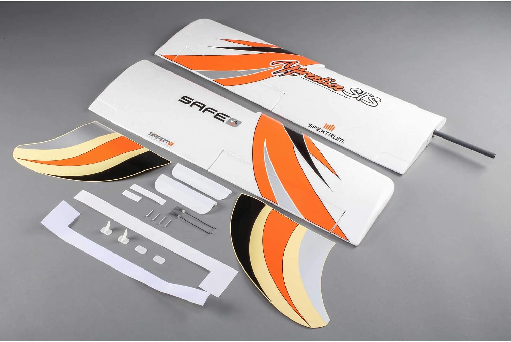

Amazon.ca · EFL310013
E-flite Wing Set Apprentice STS
Juego de alas (Wing Set) de reemplazo original E-flite para el avión entrenador RC Apprentice STS, pieza de repuesto para mantener tu aeronave lista para volar.
Ver precio en Amazon
- Repuesto original E-flite (EFL310013).
- Compatible con el avión entrenador Apprentice STS.
- Juego de alas completo de reemplazo.
- Peso del paquete: 0.408 kg.
- Ideal para restaurar tu modelo tras un aterrizaje fuerte.